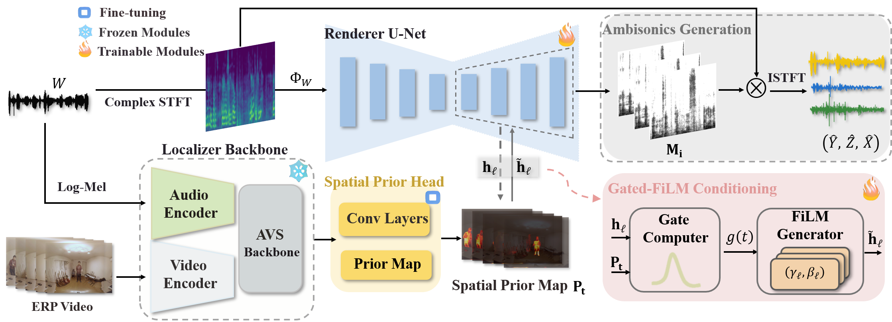

Spatial audio is a key component of immersive 360° media, yet high-quality spatial capture remains limited in real-world speech-dominant scenes. We study visually guided First-Order Ambisonics (FOA) speech spatialization in the wild: given aligned 360° video and an omnidirectional audio track, the goal is to reconstruct coherent spatial audio that remains stable under viewpoint changes. To support this task, we introduce YT-SPEECH, a speech-oriented 360° video-FOA dataset curated from YouTube. We propose a two-stage Localizer-Renderer framework, where an audio-visual segmentation backbone provides frame-wise spatial heatmaps and a conditional complex-domain U-Net reconstructs directional FOA signals from the omnidirectional channel. A confidence-based gating strategy stabilizes conditioning under ambiguous acoustic conditions. Experiments show improved reconstruction fidelity, spatial accuracy, and perceptual speech quality relative to ablated variants and prior approaches.

Overview of the proposed framework.
Generalization to real mono recordings with unknown FOA.